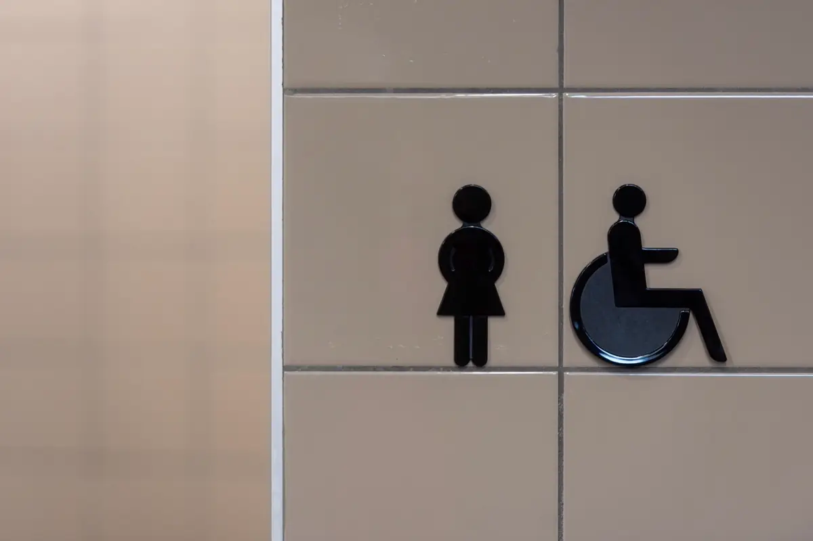
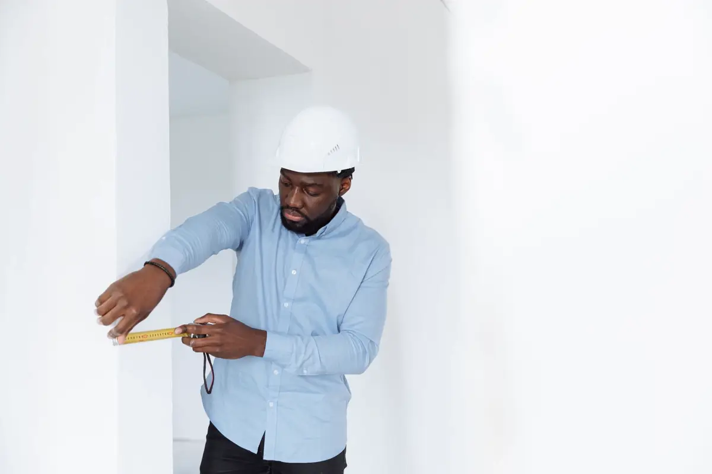
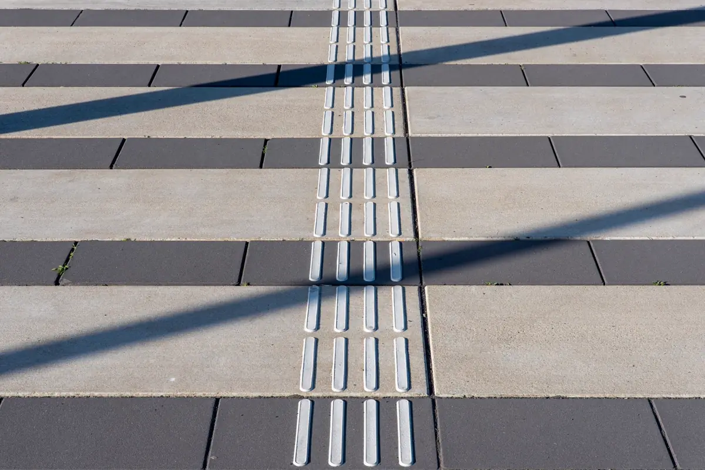

Por que o alvará passou a depender de acessibilidade
A Lei Brasileira de Inclusão (Lei 13.146/2015), no artigo 60, condiciona a concessão e a renovação do alvará de funcionamento à observância e à certificação das regras de acessibilidade. Na prática, a prefeitura passa a pedir um documento técnico que diga se o estabelecimento atende à ABNT NBR 9050 — e, se não atende, o que será feito.
Esta página trata só desse caso: o laudo que acompanha o pedido ou a renovação do alvará de loja, clínica, consultório, restaurante, academia, escola, escritório ou galpão com atendimento ao público. O escopo técnico completo da vistoria, item por item, está em laudo de acessibilidade NBR 9050.
O que a prefeitura confere no laudo
O analista do processo não vai à obra: ele lê o documento. Por isso o laudo precisa ser conclusivo — dizer com clareza se o imóvel atende, atende com ressalvas ou não atende, e em quais itens. Laudo que só descreve o imóvel, sem conclusão, volta com exigência e atrasa a liberação.
- Identificação do imóvel e da atividade — endereço, área, uso e se há atendimento ao público;
- Responsável técnico — nome, registro profissional e número da ART;
- Método — o que foi medido, com qual instrumento, e a norma de referência;
- Resultado por item — conforme ou não conforme, com medida e foto;
- Conclusão — e, quando houver pendência, o plano de adequação com prazo.

Itens que mais travam o alvará na Grande Vitória
| Item | O que costuma estar errado |
|---|---|
| Entrada principal | Degrau na porta e acesso de cadeirante só pelos fundos ou pela garagem |
| Sanitário acessível | Inexistente, ou "adaptado" sem área de transferência e com barras fora de posição |
| Balcão de atendimento e caixa | Todo na mesma altura, sem trecho rebaixado com espaço para as pernas |
| Circulação interna | Corredor estreitado por gôndola, mesa ou estoque, abaixo da largura livre exigida |
| Vaga reservada | Estacionamento próprio sem vaga PcD e de idoso, ou vaga sem faixa lateral |
| Sinalização | Sem símbolo internacional de acesso e sem piso tátil de alerta em desnível |

Como fazemos o laudo para o alvará
Leitura da exigência
Partimos do que a prefeitura pediu — notificação, checklist do processo ou exigência do protocolo — para que o laudo responda exatamente a isso.
Vistoria com medição
Percurso da calçada ao último ambiente de uso do público, com trena, nível digital e foto de cada item. O valor medido vai para o laudo.
Laudo conclusivo
Resultado item a item e conclusão em linguagem que o analista entende de primeira leitura, com a norma citada em cada não conformidade.
ART e plano de adequação
ART registrada no CREA-ES e, se houver pendência, plano com solução, prioridade e prazo para anexar ao processo.
Quando o imóvel não atende tudo
É o caso mais comum em imóvel alugado e em prédio antigo. A NBR 9050 admite soluções próprias para edificação existente, e o laudo deve apontar a solução tecnicamente viável para cada barreira, em vez de pedir uma reforma impossível. Plataforma no lugar de rampa, sanitário acessível em outro ponto do pavimento, atendimento rebaixado em parte do balcão: são decisões técnicas que precisam ficar justificadas por escrito.
Desníveis e rampas metálicas na entrada se cruzam com a montagem de estrutura metálica; piso de rota e de área externa, com o piso emborrachado. Se o alvará também depende do Corpo de Bombeiros, a regularização anda em paralelo com o AVCB — vale vistoriar os dois no mesmo dia.

Laudo, declaração e projeto: qual o processo pede
Laudo de acessibilidade
Documento de vistoria de um imóvel que já existe. É o que se usa para alvará de atividade em ponto comercial pronto, com a ART de acessibilidade vinculada.
Declaração ou termo de responsabilidade
Algumas prefeituras aceitam uma declaração do responsável técnico em formulário próprio. Ela só deve ser assinada depois da vistoria: declarar conformidade que não existe expõe o profissional e o proprietário.
Projeto de acessibilidade
Pedido em obra nova, ampliação e reforma com aprovação de projeto. Nesse caso a acessibilidade entra nas pranchas, junto com os demais laudos técnicos e ART da obra.
Perguntas frequentes sobre laudo de acessibilidade para alvará
Todo alvará de funcionamento exige laudo de acessibilidade?
A Lei 13.146/2015 condiciona a concessão e a renovação do alvará às regras de acessibilidade, mas a forma de comprovar varia de prefeitura para prefeitura e de atividade para atividade. Estabelecimento com atendimento ao público é o caso típico em que o laudo é pedido. O primeiro passo é ler a exigência do processo; a partir dela definimos se o documento é laudo, declaração do responsável técnico ou projeto.
Imóvel alugado pode receber laudo de acessibilidade?
Pode, e é o caso mais comum. O laudo é do imóvel na condição em que ele está sendo usado. As adequações, porém, mexem na edificação, e por isso o plano de adequação costuma ser discutido entre inquilino e proprietário antes da obra.
O laudo reprovado impede o alvará?
Não necessariamente. Quando há pendência, o laudo traz o plano de adequação com solução e prazo, e muitos processos seguem com esse compromisso documentado. O que trava o alvará é a falta de qualquer documento ou um laudo sem conclusão.
Quanto tempo leva o laudo de acessibilidade para alvará?
Uma loja, clínica ou escritório de porte médio é vistoriado em meio dia. O laudo com a ART costuma sair entre cinco e dez dias úteis depois da vistoria, dependendo do tamanho do imóvel e da quantidade de não conformidades.
O laudo vale para a renovação do alvará?
Vale enquanto o imóvel e o uso continuarem os mesmos. Reforma, mudança de layout, ampliação ou troca de atividade exigem nova vistoria, porque a rota acessível e o sanitário podem ter mudado.
Laudo para alvará na Grande Vitória
Vistoria de acessibilidade para concessão e renovação de alvará em lojas, clínicas, restaurantes, escolas e escritórios:
O processo do alvará está parado na acessibilidade?
Mande a exigência da prefeitura e o endereço. Retornamos com escopo, prazo e valor do laudo.
Continue lendo
- Regularização de imóvel e habite-se
- Laudo de acessibilidade NBR 9050 — o que é verificado item a item
- ART de acessibilidade — quem assina e como conferir
- Laudo de acessibilidade para condomínio
- Notificação do Ministério Público por acessibilidade
- AVCB e alvará do Corpo de Bombeiros
- Laudos técnicos e ART — todos os tipos de documento